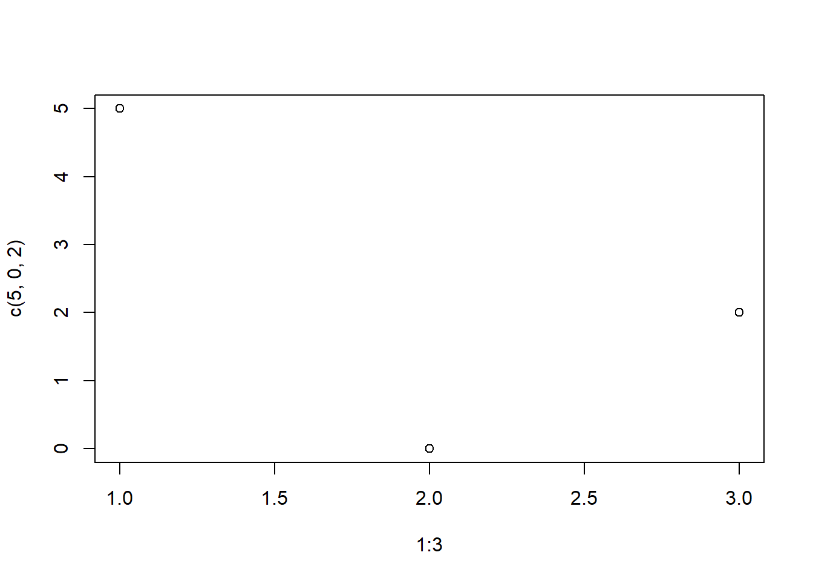
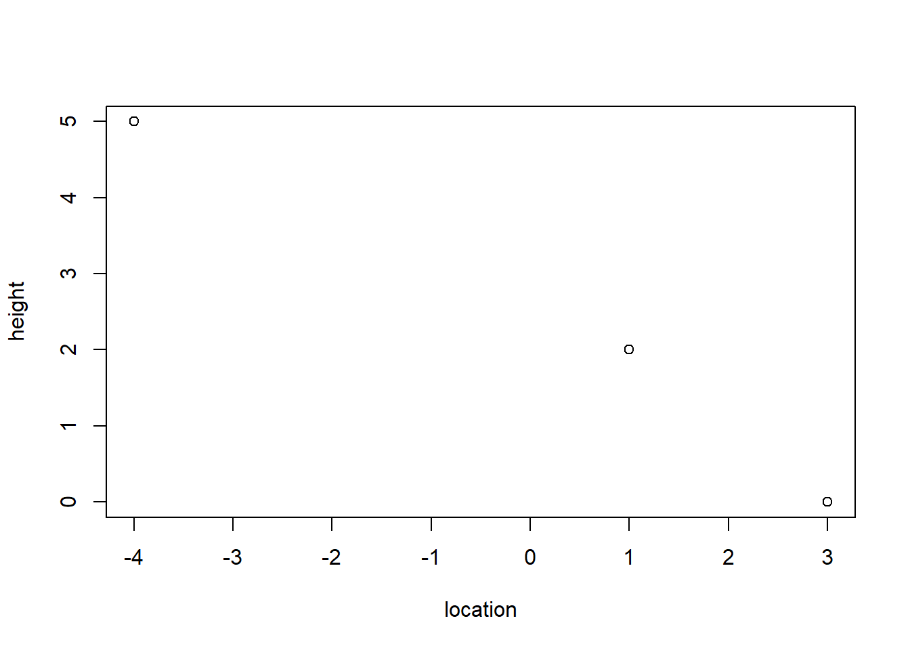
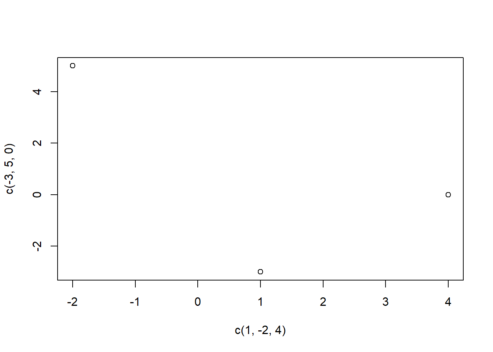

1 + 3[1] 4This Quarto document operates similar to a word document with extra capabilities.
To produce an html document with this work, click the “Render” button at the top. View the html document and compare it the .qmd file before proceeding.
There are two different forms you can edit this document with. “Source” uses traditional markdown display and can be helpful for advanced users wanting more flexibility. “Visual” is more user friendly so we recommend using it as the editor.
Below is a code chunk. It allows us to insert, display, and run R code in our document. To run a code chunk press the green arrow in the chunk.
1 + 3[1] 4Notice the output is printed below the chunk, with [1] signifying a line of output.
# Hashtags are used for comments in your code
# Comments do not get run
2 + 3[1] 54 / 3[1] 1.333333w <- 0 # Stores the value 0 into the variable w
print(w) # Prints the value stored[1] 0x <- "a" # Stores the character/letter "a" into the variable x
x # Also prints the value stored[1] "a"Change the variable “age” to contain your actual age
age <- 26Run the following code to print your age to the console.
print(paste("My age is ", age))[1] "My age is 26"At this point we have made a change to this document. You should save your document frequently, and it is up to you how often you commit those changes to Git.
Let’s practice committing. Save this document now. In the Git pane commit the change you have made to this document with a meaning full commit message.
After you have committed, “pull” using the blue arrow and then “push” using the green arrow.
Now proceed on through the rest of this lab. Make sure to commit your changes occasionally.
The code below stores the vector containing values 1-5 into variable y.
y <- c(1, 2, 3, 4, 5)This prints the vector stored in variable y
y[1] 1 2 3 4 5Computes the length of the vector (i.e. number of elements stored)
length(y)[1] 5Another way to store vectors of consecutive numbers
z_vector <- 1:5
z_vector[1] 1 2 3 4 5Elements of a vector can be access by specifying its position in the vector.
y[1] # prints the first value stored in y[1] 1Change new_vector to contain a vector with the elements: 4, 6, 8, 10.
Solution
new_vector <- c(4, 6, 7, 10)Print the 3rd (not 1st) value stored in new_vector.
Solution
new_vector[3][1] 7If statements only run the accompanying code if the condition is true
if (w == 0) {
print("w equals 0")
}[1] "w equals 0"If else statements provide different code to be run depending on the condition
if (w > 0) {
print("w is greater than 0")
} else {
print("w is less than 0")
}[1] "w is less than 0"Note “!=” means “does not equal”
if (age != 999) {
print("message 1")
} else {
print("message 2")
}[1] "message 1"Write an if statement to check if age is less than 21. If true, print the message “I am younger than 21!”. If false, print the message “I am 21 or over!”. Make sure to add an R code chunk here using the green +C button above
Solution
if (age < 21) {
print("I am younger than 21!")
} else {
print("I am 21 or over!")
}[1] "I am 21 or over!"You can also write if statements with multiple conditions.
if (z_vector[2] == 1) {
print("Stuff")
} else if (z_vector[2] == 2) {
print("Other stuff")
} else {
print("More stuff")
}[1] "Other stuff"For loops iterate over the accompanying code for a given sequence
for (iteration in y) {
print(iteration) # the value stored in iteration changes with each loop
}[1] 1
[1] 2
[1] 3
[1] 4
[1] 5The sequence to iterate over does not need to be defined outside of the loop
for (i in 3:5) {
print(i)
}[1] 3
[1] 4
[1] 5For loops can be helpful for accessing individual elements of a vector
for (i in 1:length(new_vector)) { # i will go from 1 to 5 (length of the vector)
print(
paste(
"The value stored in position", i, "of new_vector is:", new_vector[i]
)
)
}[1] "The value stored in position 1 of new_vector is: 4"
[1] "The value stored in position 2 of new_vector is: 6"
[1] "The value stored in position 3 of new_vector is: 7"
[1] "The value stored in position 4 of new_vector is: 10"paste() allows us to print what is stored in a variable. Here we used it within print().
Change the loop below to loop over the days of the week and print the day instead of the month.
Solution
for (week in c("Mon.", "Tues.", "Wed.", "Thur.", "Fri.")) {
print(paste("The week is", week))
}[1] "The week is Mon."
[1] "The week is Tues."
[1] "The week is Wed."
[1] "The week is Thur."
[1] "The week is Fri."For a scatterplot we have to specify x and y axis values
plot(x = 1:3, y = c(5, 0, 2)) # plots the points (1, 5), (2, 0), (3, 2)
We can specify axis labels
plot(x = c(-4, 3, 1), y = c(5, 0, 2), xlab = "location", ylab = "height")
Make a plot with the following points (1, -3), (-2, 5), (4, 0). You will have to add an R chunk to write your code in.
Solution
plot(x = c(1, -2, 4), y = c(-3, 5, 0))
We have finished editing this lab now so save, commit, pull, push this document.
Render this document to html and commit, pull, push the html.